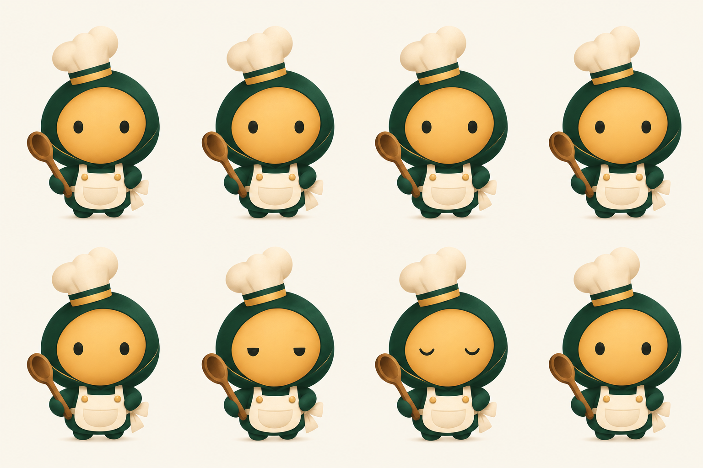
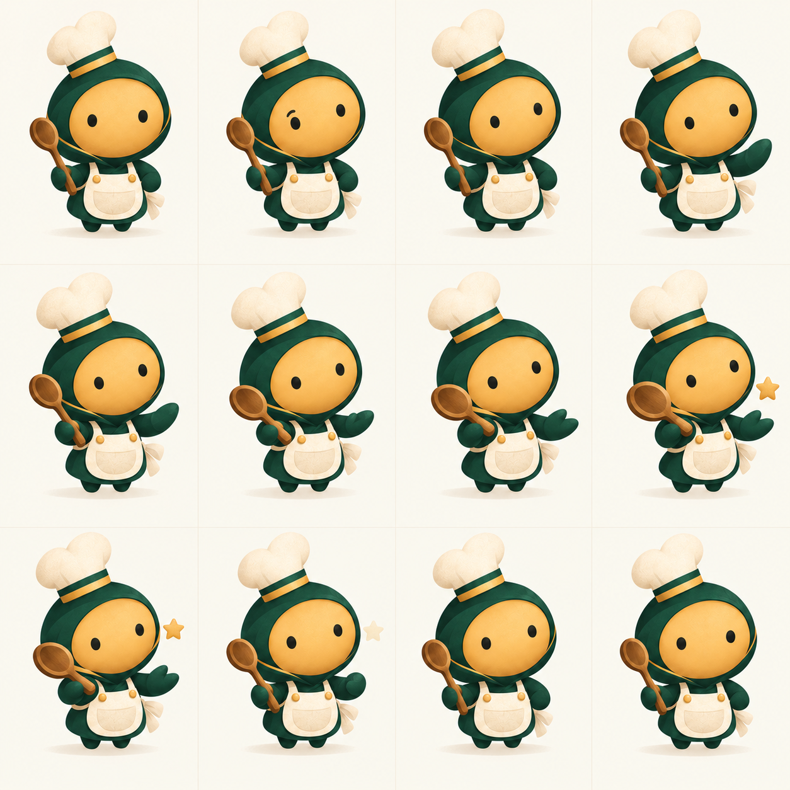
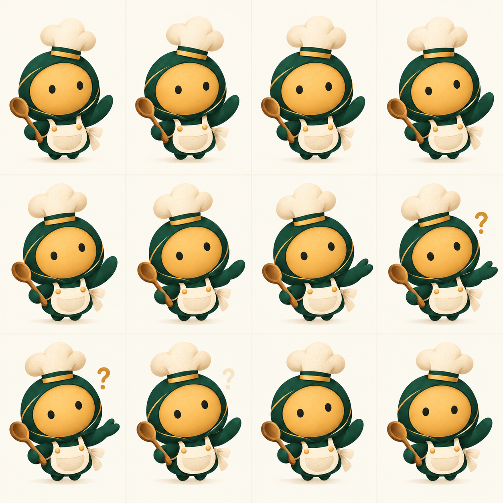
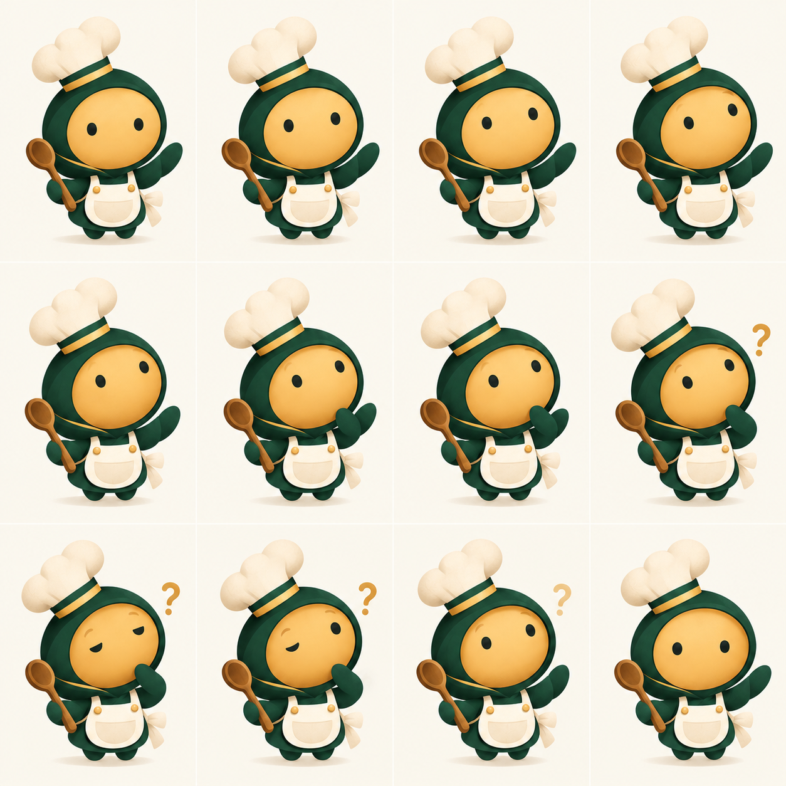
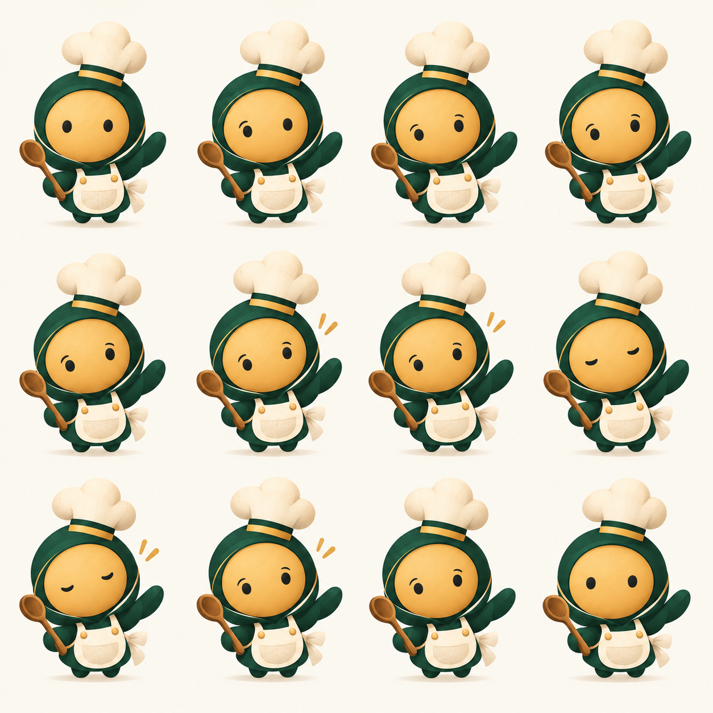

On cuisine quoi ce soir ?
ReposPrésence longue, presque immobile. Il peut ensuite passer à Écoute quand la demande part.

Mes recettes
Risotto citron
Soupe butternut
Gratin d’automne
Risotto citron
Soupe butternut
Gratin d’automne
Chef C&C
Tu as envie de quoi ?
PropositionAprès une demande, le Chef avance une solution actionnable.

Étape 3
Mélange la sauce hors du feu. Ajoute le parmesan progressivement.
Mélange la sauce hors du feu. Ajoute le parmesan progressivement.
Montre-moi la sauce, je te dis quoi faire.
Question, seulement si le Chef a besoin de voir.
Question, seulement si le Chef a besoin de voir.

A. Bascule plein écran
Continuité avec le Cahier actuel. Le Chef peut écouter, réfléchir, proposer et afficher une recette sans écraser la lecture de la liste.

B. Volet contextuel
Utile surtout en cuisine : aide brève, refermable, au-dessus de l’étape. Il ne remplace pas la conversation complète.
